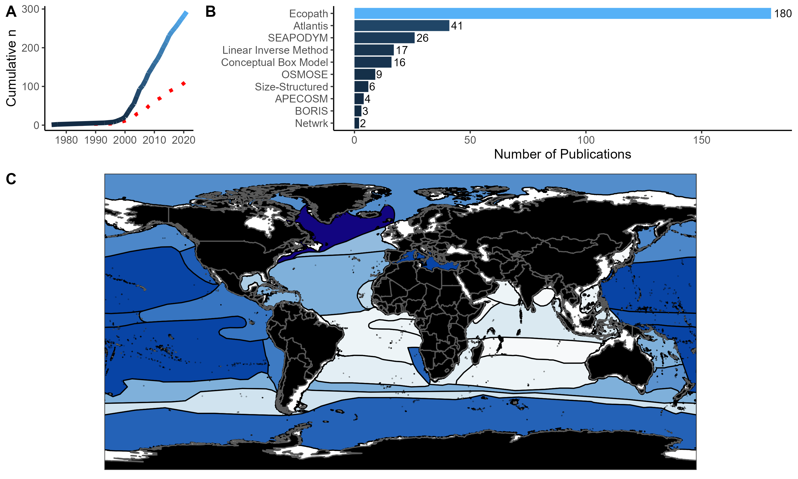

Ecosystem Modeling in the Oceanic Gulf of Mexico
Synopsis of Work
Ecosystem modeling is a popular technique to incorporate all components of an ecosystem within one model framework to simultaneously forcast population trends in response to disturbances. Following the 2010 Deepwater Horizon oil spill, questions surrounding the stability of the deep-pelagic (water column deeper than 200m) ecosystem have arisen. I have developed an ecosystem model using the Ecopath with Ecosim framework that incorporates the latest data regarding the oceanic ecosystem in the northern oceanic Gulf of Mexico. Ongoing objectives involve estimating the mortality exerted to deep-sea organisms after the oil spill, forecasting population trends, improving the efficacy of the model, and detailed sensitivity analyses.
Publications
Woodstock, M.S., T.T. Sutton, T. Frank, K. Fennel, B. Wang, F. Hernandez, Y. Zhang. (in review). Mesopelagic micronekton mortality regimes and ecosystem functioning in the oceanic Gulf of Mexico following the 2010 Deepwater Horizon oil spill.
Woodstock, M.S., Y. Zhang. (2022). Towards ecosystem modeling in the deep sea: A review of past efforts and primer for the future. Deep-Sea Research Part I: Oceanographic Research Papers. 188:103851 Link to Paper
- Woodstock, M.S., T.T. Sutton, T. Frank, Y. Zhang. (2021). An early warning sign: trophic structure changes in the oceanic Gulf of Mexico from 2011–2018. Ecological Modelling. 445:109509. Link to Paper

Presentations
Sutton, T., Z. Milligan, K. Boswell, H. Bracken-Grissom, A. Cook, T. Frank, D. Hahn, M. Johnston, H. Judkins, J. Moore, J. Moore, J. Quinlan, P. Peres, I. Romero, M. Vecchione, M. Shivji, A. Bernard, M. D’Elia, M. Woodstock, Y. Zhang, K. Benson, M. Karnauskas, F. Parker. (2022). The state of the pelagic Gulf of Mexico: the continuing mission of the DEEPEND research consortium. The Gulf of Mexico Conference.
Sutton, T.T., A.B. Cook, K.M. Boswell, H.D. Bracken-Grissom, R. Eytan, D. Fenolio, T. Frank, D. Hahn, M.W. Johnston, H. Judkins, R.J. Milligan, J. Moore, J. Quinlan, T. Richards, I.C. Romero, M. Shivji, A. Bernard, M. Vecchione, M.S. Woodstock, Y. Zhang. (2022). Sustained observation of the deep-pelagic Gulf of Mexico: the DEEPEND|RESTORE program. ASLO Ocean Sciences Meeting. Online Presentation. Poster
Woodstock, M.S., T.T. Sutton, T. Frank, Y. Zhang. (2021). Assessing trophic structure dynamics in ecosystem models using the offshore Gulf of Mexico as an example. ASLO Aquatic Sciences Meeting. Online Presentation.
Woodstock, M.S., T.T. Sutton, T. Frank, Y. Zhang. (2021). Ecosystem modeling in the oceanic zone: A Gulf of Mexico case study. 16th Deep Sea Biology Symposium. Brest, France. Poster
Woodstock, M.S., T.T. Sutton, T. Frank, Y. Zhang. (2020). Assessing trophic structure dynamics in ecosystem models using the offshore Gulf of Mexico as an example. American Fisheries Society Annual Meeting. Online Presentation.
Woodstock, M.S., T.T. Sutton, T. Frank, Y. Zhang. (2020). An early warning sign: trophic structure changes in the oceanic Gulf of Mexico from 2011–2018. Deep Sea Biology Society Meeting. Online Presentation.
Woodstock, M.S., B. Wang, K. Fennel, T.T. Sutton, Y. Zhang. (2020). Ecological importance of mesopelagic fishes in the oceanic Gulf of Mexico. Florida International University Biosymposium. North Miami, FL.
Woodstock, M.S., B. Wang, K. Fennel, T.T. Sutton, Y. Zhang (2020). A comparison of two ecosystem models of the oceanic Gulf of Mexico. Ocean Sciences Meeting. San Diego, CA. Poster
Quiquempois, V., M.S. Woodstock, Y. Zhang, M. Heithaus, J. Kiszka. (2019). The top-down effects of cetaceans in the Gulf of Mexico: Who are the key players? World Marine Mammal Conference. Barcelona, Spain.
Woodstock, M.S. (2019). Food web model of the oceanic Gulf of Mexico. Florida International University Biosymposium. North Miami, FL.
Collaborators
Dalhousie University Marine Environmental Modelling Group
Deep-Pelagic Nekton Dynamics of the Gulf of Mexico
Florida International University Fisheries and Ecosystem Assessment Lab
University of Southern Mississippi Fisheries Oceanography and Ecology Lab